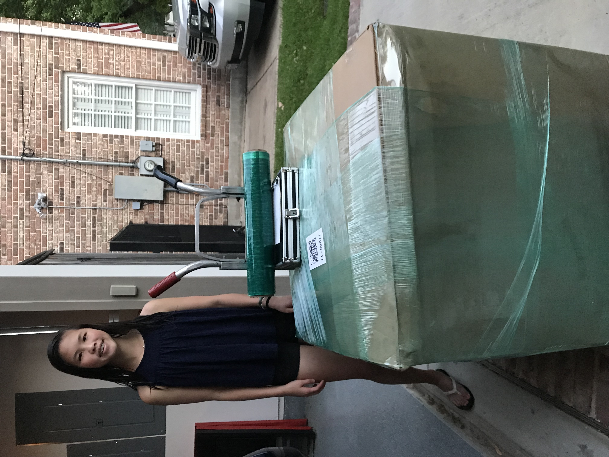
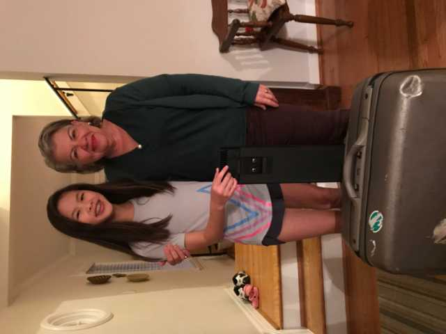

Star of Hope
November 2, 2018
120 pairs of shoes have been delivered to the Star of Hope!
Dress for Success
September 15, 2018
Dress shoes were delivered to Dress for Success.
Houston Donations
July 28, 2018
After our experience donating shoes to Hurricane Harvey victims, we realized that there is a great need for gently-worn shoes in our own community. We have been able to donate shoes to help the homeless in Houston through organizations such as Star of Hope and Step Up Houston.
More Shoes to Costa Rica
June 11, 2018
Our giant box of shoes has arrived in Costa Rica!!
St. John's Shoe Drive
January 1, 2018
During the 2017 holiday season, we had the opportunity to organize a donation box at St. John’s Middle School to collect shoes. We are grateful for the generosity and enthusiasm of the St. John’s community in supporting our cause, and we are excited to report the collection of 112 new and gently used shoes! Continue reading...
Thank You Señora Sánchez!
November 1, 2017
Señora Sánchez, a friend of the Guo family, was so kind and generous to personally deliver a suitcase full of shoes to Costa Rica on her trip back to visit family!!!
Hurricane Harvey
September 1, 2017
After Hurricane Harvey, many families lost their homes and all their belongings, including clothing and shoes, due to the high flood waters. Living in Houston, a place that was significantly impacted by Harvey’s rain, we saw firsthand how many people, including friends and acquaintances, were devastated by the enormity of destruction. Because of this devastation, we have decided to give back to our community by donating many of the shoes that we have collected to children and local Houstonians in need. Continue reading...